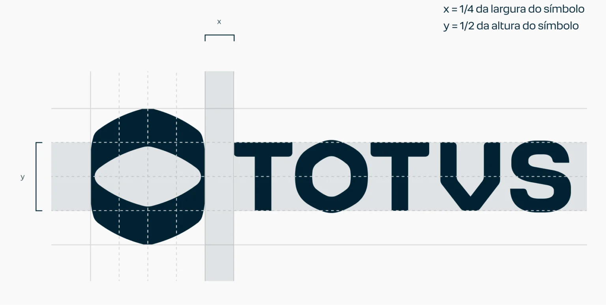

Na reprodução da marca em espaços físicos — como letras-caixa ou adesivos em vinil — use esta relação construtiva para obter as proporções que garantem a integridade da marca. x = ¼ da largura do símbolo · y = ½ da altura do símbolo.

Importante: sempre utilize os arquivos oficiais da marca. Não reconstrua o logo a partir do seu desenho ou de elementos avulsos.